Engine Unit: Reassembly
- INSTALL CYLINDER BLOCK WATER DRAIN COCK
- Apply adhesive to 2 or 3 threads of the drain union, and install it within 3 minutes.
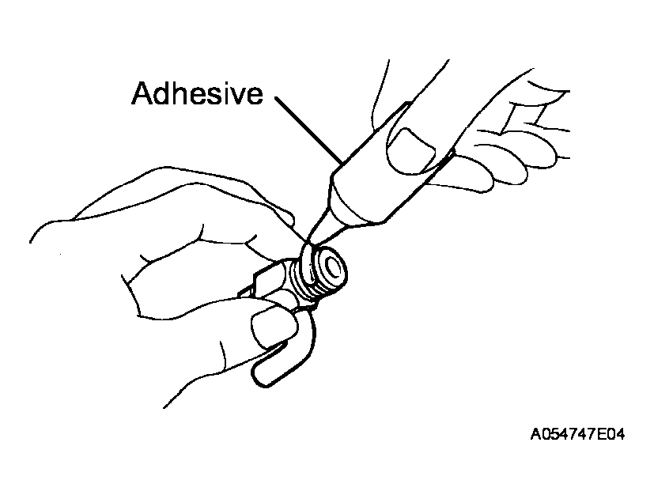
Courtesy of © TOYOTA, LICENSE AGREEMENT TMS1002Seal packing: Part No. 08826-00100
- After applying the specified torque, rotate the drain union clockwise until its drain port faces downward.
Torque: 35 N*m (357 kgf*cm, 26 ft.*lbf)
NOTE:- Install the water drain cock within 3 minutes of applying adhesive.
- Do not add coolant for at least 1 hour after installation.
- Do not rotate the drain union more than 360° in this step, and never loosen it after setting the union correctly.
- The pipe of the drain cock should be within 40° of the vertical position.
- Apply adhesive to 2 or 3 threads of the drain union, and install it within 3 minutes.
- INSTALL TIGHT PLUG
- Apply adhesive to new tight plugs.
Adhesive: Part No. 08826-00070, THREE BOND 1324 or equivalent.
- Using SST, tap in the tight plugs as shown in the illustration.
SST 09950-60010 (09951-00180), 09950-70010 (09951-07100)
Standard depth: 0.2 to 1.2 mm (0.008 to 0.047 in.)
- Apply adhesive to new tight plugs.
- INSTALL CYLINDER HEAD SET STRAIGHT PIN
- Using a plastic-faced hammer, tap in the straight pin.
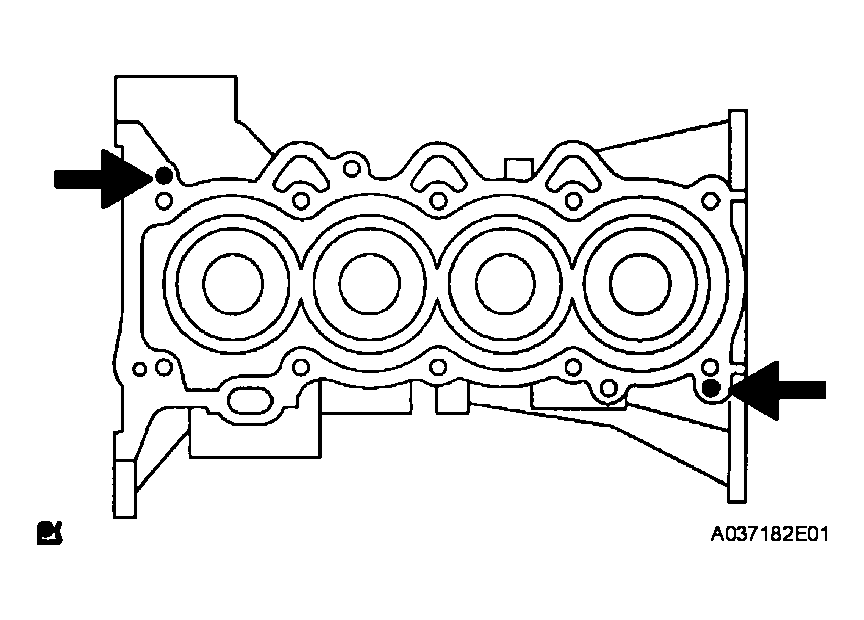
Courtesy of © TOYOTA, LICENSE AGREEMENT TMS1002Standard protrusion: 8.5 to 9.5 mm (0.335 to 0.374 in.)
- Using a plastic-faced hammer, tap in the straight pin.
- INSTALL STRAIGHT PIN
- Using a plastic-faced hammer, tap in the straight pin.
Standard protrusion:
3.5 to 4.5 mm (0.138 to 0.177 in.) for pin A
18.5 to 19.5 mm (0.728 to 0.768 in.) for pin B
8.5 to 9.5 mm (0.335 to 0.724 in.) for pin C
11.5 to 12.5 mm (0.453 to 0.492 in.) for pin D
- Using a plastic-faced hammer, tap in the straight pin.
- INSTALL STUD BOLT
- Using an E5 "Torx" socket, install the 6 stud bolts.
Torque: 5.0 N*m (51 kgf*cm, 44 in.*lbf)
- Using an E5 "Torx" socket, install the 6 stud bolts.
- INSTALL CRANKSHAFT
- Install the upper bearing with the oil groove onto the cylinder block, and the lower bearing onto the bearing cap.NOTE: Do not apply engine oil to the contact surface of the cylinder block or the backside of the bearing.
HINT:
Mass production parts do not have claws as marks.
If reusing the mass production parts, measure the clearance of both sides with the bearing in the center of the bearing cap.
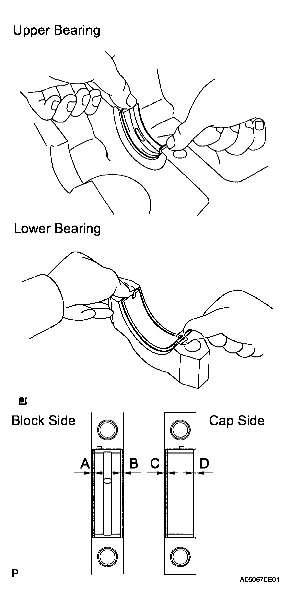
Courtesy of © TOYOTA, LICENSE AGREEMENT TMS1002Standard clearance:
A - B = within 0.8 mm (0.032 in.)
C - D = within 0.4 mm (0.016 in.)
- Install the 2 thrust washers onto the No. 3 journal position of the cylinder block with the oil grooves facing outward.
- Apply engine oil to the upper bearing and install the crankshaft onto the cylinder block.
- Check the front marks and numbers and install the bearing caps onto the cylinder block.
- Apply a light coat of engine oil to the threads of the bearing cap bolts.
- Using SST, tighten the bolts in several steps by the specified torque in the sequence shown in the illustration.
SST 09011-38121
Torque: 22 N*m (224 kgf*cm, 16 ft.*lbf)
NOTE: Check that the crankshaft turns smoothly. - Mark the front of the bearing cap bolts with paint.
- Retighten the bearing cap bolts by 90° in the same sequence.
- Check that the painted mark is now at a 90° angle to the front.
- Install the upper bearing with the oil groove onto the cylinder block, and the lower bearing onto the bearing cap.
- INSTALL PISTON PIN
- Coat the inner surface of the connecting rod bore and piston pin with engine oil.
- Align the cavity of the piston with the protruding portion of the connecting rod.
- Using SST, push in the piston pin.
SST 09221-25026 (09221-00021, 09221-00030, 09221-00190, 09221-00141, 09221-00150)
NOTE: Keep the pistons, pins, rings, connecting rods and bearings in the correct order so that they can be returned to the original locations when reassembling.
- INSTALL CONNECTING ROD BEARING
- Align the bearing claw with the grooves of the connecting rod and connecting rod cap.
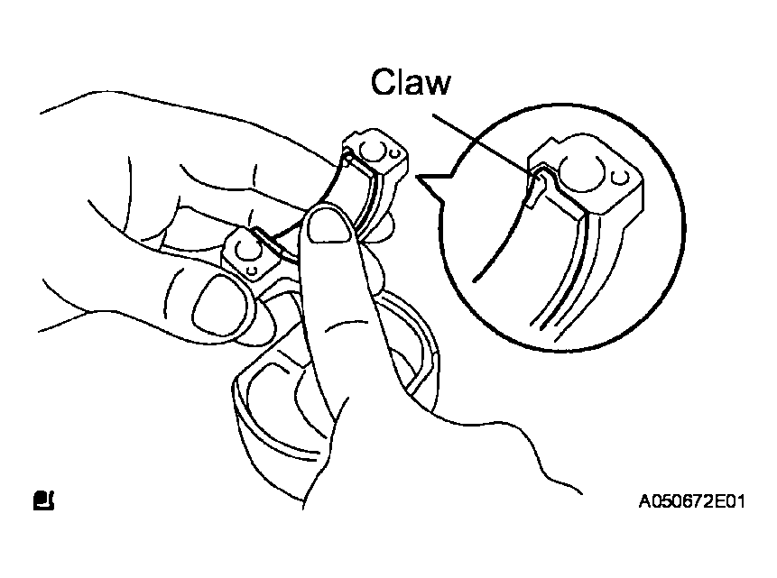
Courtesy of © TOYOTA, LICENSE AGREEMENT TMS1002NOTE: Clean the backside of the bearing and the bearing surface of the connecting rod, and keep them free of oils.
- Align the bearing claw with the grooves of the connecting rod and connecting rod cap.
- INSTALL PISTON RING SET
HINT:
If reusing the piston rings, install them onto the matched pistons with the surfaces facing correctly.
- Install the oil ring expander and 2 side rails by hand.
- Using a piston ring expander, install the 2 compression rings.
- Position the piston rings so that the ring ends are as shown in the illustration.
- INSTALL PISTON WITH CONNECTING ROD
- Apply engine oil to the cylinder walls, pistons, and the surfaces of the connecting rod bearings.
- Check the position of the piston ring ends.
- Using a piston ring compressor, push the correctly numbered piston and connecting rod assemblies into each cylinder with the front mark on the piston facing forward.
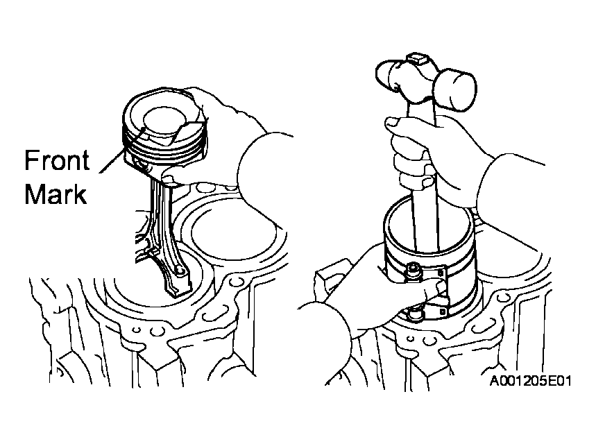
Courtesy of © TOYOTA, LICENSE AGREEMENT TMS1002NOTE:- Clean the backside of the bearing and the bearing surface of the connecting rod cap, and keep them free of oils.
- Match the numbered connecting rod cap with the correct connecting rod.
- Match the connecting rod and cap together in the correct combination. Then install the cap onto the connecting rod, making sure that the front mark on the cap is correctly oriented.
- Apply a light coat of engine oil to the threads of the connecting rod cap bolts.
- Using SST, tighten the bolts in several steps by the specified torque.
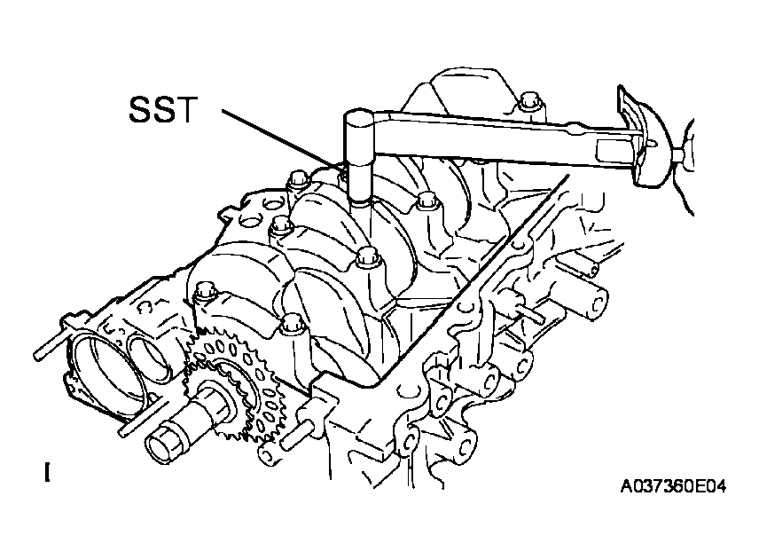
Courtesy of © TOYOTA, LICENSE AGREEMENT TMS1002SST 09205-16010
Torque: 15 N*m (153 kgf*cm, 11 ft.*lbf)
- Mark the front of the connecting cap bolts with paint.
- Retighten the cap bolts by 90° as shown.
- Check that the crankshaft turns smoothly.
- INSTALL STUD BOLT
- Using an E5 "Torx" socket, install the 4 stud bolts.
- INSTALL OIL PAN
- Apply a continuous line of seal packing to the oil pan mating surface as shown in the illustration.
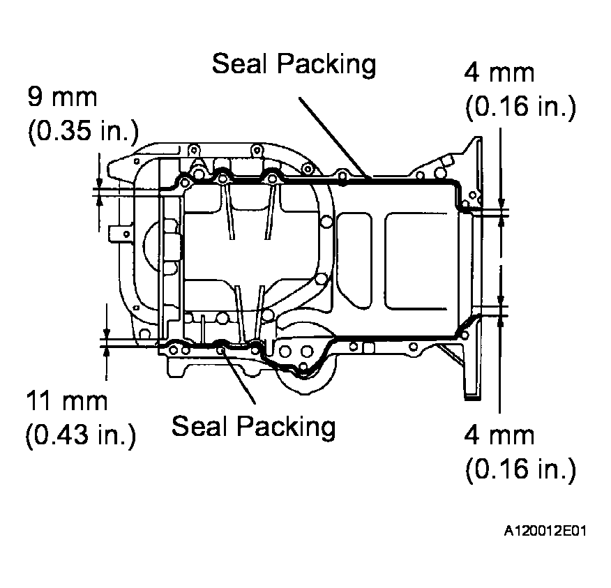
Courtesy of © TOYOTA, LICENSE AGREEMENT TMS1002Seal packing: Part No. 08826-00080 or equivalent
Standard seal diameter: 2.0 mm to 3.0 mm (0.079 to 0.118 in.)
NOTE:- Remove any oil from the contact surface.
- Install the oil pan within 3 minutes of applying seal packing.
- Do not expose the seal to engine oil for at least 2 hours after installation.
- Install 2 new O-rings onto the cylinder block.
- Using several steps, install and uniformly tighten the 13 bolts in the sequence shown in the illustration.
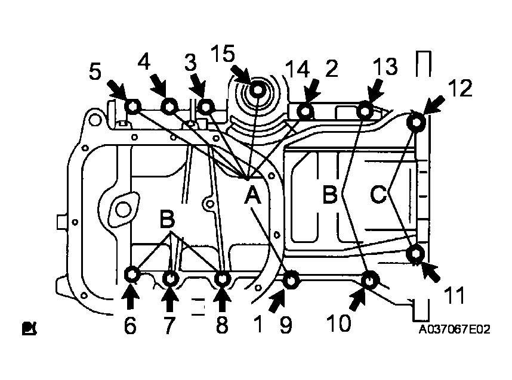
Courtesy of © TOYOTA, LICENSE AGREEMENT TMS1002Torque: 24 N*m (245 kgf*cm, 18 ft.*lbf)
HINT:
Each bolt length is as follows:
49 mm (1.93 in.) for bolt A
88 mm (3.47 in.) for bolt B
144 mm (5.67 in.) for bolt C
- Apply a continuous line of seal packing to the oil pan mating surface as shown in the illustration.
- INSTALL OIL STRAINER
- Install a new gasket and the oil strainer with the 2 nuts and bolt.
Torque: 11 N*m (112 kgf*cm, 8.1 ft.*lbf)
- Install a new gasket and the oil strainer with the 2 nuts and bolt.
- INSTALL NO. 2 OIL PAN
- Apply a continuous line of seal packing to the oil pan mating surface as shown in the illustration.
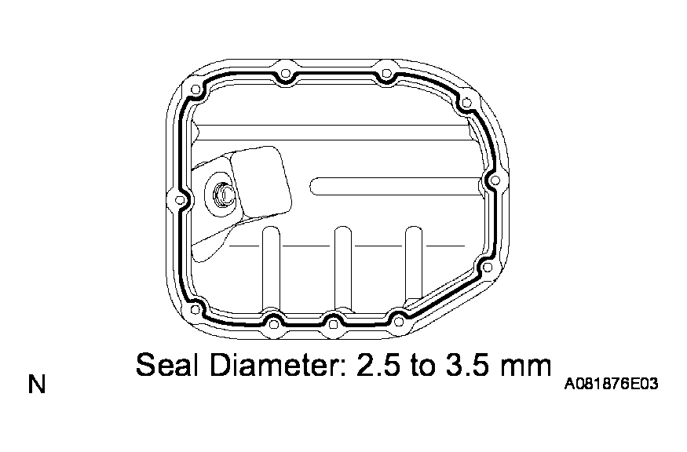
Courtesy of © TOYOTA, LICENSE AGREEMENT TMS1002Seal packing: Part No. 08826-00080 or equivalent
Standard seal diameter: 2.5 mm to 3.5 mm (0.098 to 0.14 in.)
NOTE:- Remove any oil from the contact surface.
- Install the oil pan within 3 minutes of applying seal packing.
- Do not expose the seal to engine oil for at least 2 hours after installation.
- Do not start the engine within 2 hours of installation.
- Install the No. 2 oil pan with the 9 bolts and 2 nuts.
Torque: 9.0 N*m (92 kgf*cm, 80 in.*lbf)
- Install the drain plug with a new gasket.
Torque: 37.5 N*m (382 kgf*cm, 28 ft.*lbf)
- Apply a continuous line of seal packing to the oil pan mating surface as shown in the illustration.
- INSTALL OIL FILTER UNION
- Using a 12 mm hexagon wrench, install the oil filter union.
Torque: 30 N*m (306 kgf*cm, 22 ft.*lbf)
- Using a 12 mm hexagon wrench, install the oil filter union.
- INSTALL OIL FILTER
- Check and clean the oil filter installation surface.
- Apply clean engine oil to the gasket of the new oil filter.
- Lightly screw the oil filter into place, and tighten it until the gasket comes into contact with the seat.
- Using SST, tighten it an additional 3/4 turn.
SST 09228-06501
If using a torque wrench, tighten to the specified torque.
Torque: 17.5 N*m (178 kgf*cm, 13 ft.*lbf)
- INSTALL CYLINDER HEAD GASKET
- Place a new cylinder head gasket on the cylinder block with the Lot No. stamp facing upward.
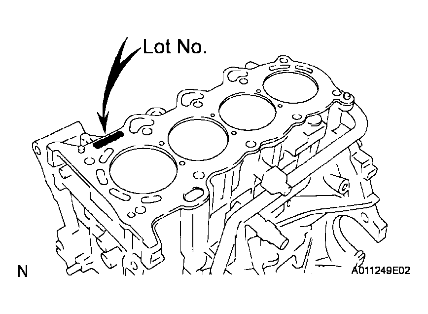
Courtesy of © TOYOTA, LICENSE AGREEMENT TMS1002NOTE:- Remove any oil from the contact surface.
- Pay attention to the mounting orientation of the cylinder head gasket.
- Place the cylinder head on the cylinder block gently in order not to damage the gasket at the bottom part of the head.
- Place a new cylinder head gasket on the cylinder block with the Lot No. stamp facing upward.
- INSTALL CYLINDER HEAD
HINT:
The cylinder head bolts are tightened in 2 successive steps.
- Apply seal packing as shown in the illustration.
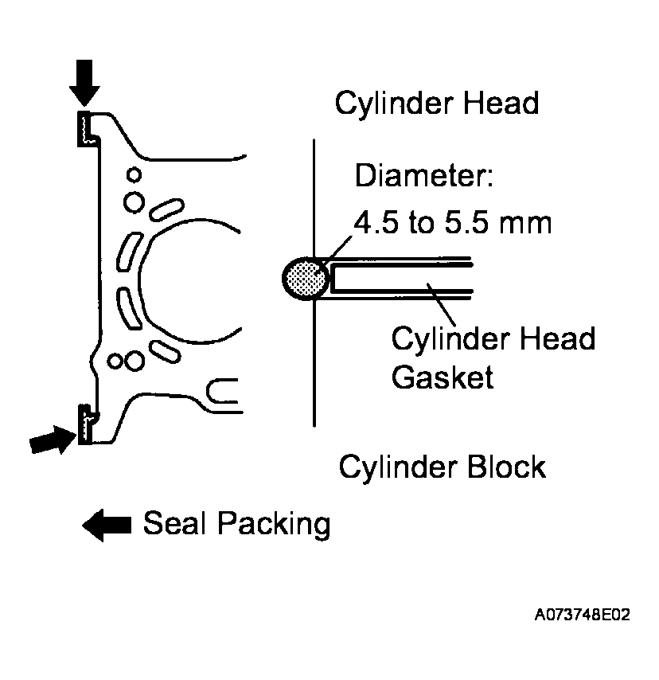
Courtesy of © TOYOTA, LICENSE AGREEMENT TMS1002Seal packing: Part No. 08826-00080 or equivalent
Standard seal diameter: 3.5 mm to 4.5 mm (0.177 to 0.217 in.)
NOTE:- Remove any oil from the contact surface.
- Install the oil pan within 3 minutes of applying seal packing.
- Apply a light coat of engine oil to the threads of the cylinder head bolts.
- Using several steps, install and uniformly tighten the 10 cylinder head bolts and plate washers with an 8 mm bi-hexagon wrench in the sequence shown in the illustration.
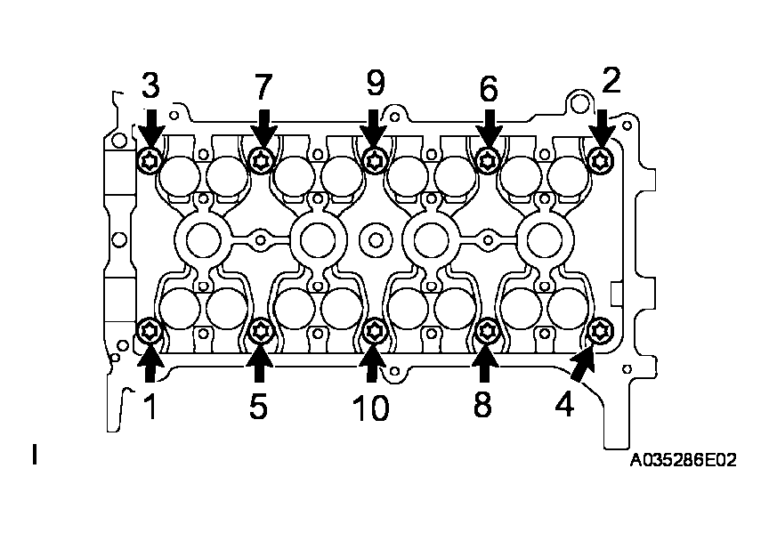
Courtesy of © TOYOTA, LICENSE AGREEMENT TMS1002Torque: 29 N*m (300 kgf*cm, 22 ft.*lbf)
- Mark the front of the cylinder head bolt with paint.
- Retighten the cylinder head bolts by an additional 90° and then another 90°, as shown in the illustration.
- Check that the painted mark is now at a 180° angle to the front.
- Apply seal packing as shown in the illustration.
- INSTALL ENGINE REAR OIL SEAL (See DISASSEMBLY )
- INSTALL CAMSHAFT TIMING GEAR
- Put the camshaft timing gear assembly and the camshaft together with the straight pin of the groove.
- Turn the camshaft timing gear assembly clockwise while pushing it lightly towards the camshaft. Push further at the position where the pin fits into the groove.
NOTE: Be careful not to turn the camshaft timing gear to the retard angle (to the right).
- Check that there is no clearance between the gear fringe and the camshaft.
- Tighten the flange bolt with the camshaft timing gear fixed in place.
Torque: 64 N*m (653 kgf*cm, 47 ft.*lbf)
- Check that the camshaft timing gear can move to the retard angle (to the right) and is locked in the most retarded position.
- INSTALL CAMSHAFT
- Apply a light coat of engine oil to the camshaft journals.
- Place the camshaft on the cylinder head with the timing mark on the camshaft timing gear facing upward.
- Examine the front marks and numbers, and tighten the bolts in the sequence shown in the illustration.
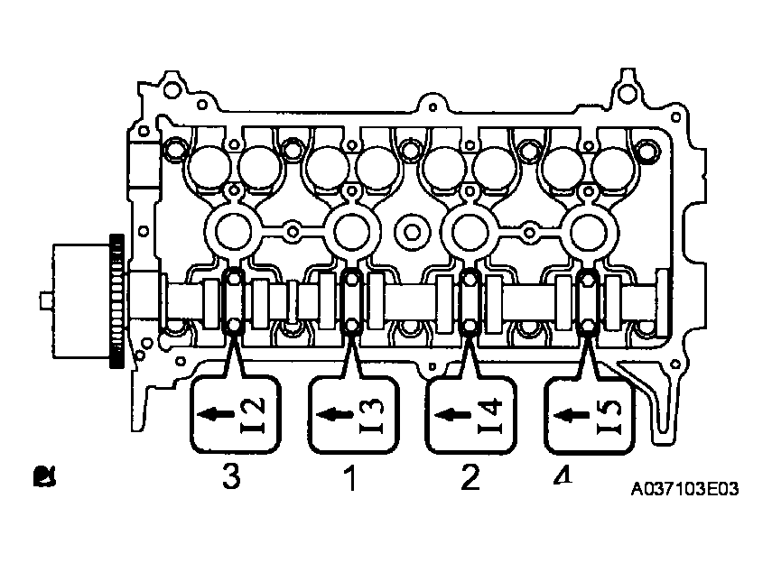
Courtesy of © TOYOTA, LICENSE AGREEMENT TMS1002Torque: 13 N*m (129 kgf*cm, 9 ft.*lbf)
NOTE: Tighten each bolt uniformly, keeping the camshaft level.
- INSTALL CAMSHAFT TIMING SPROCKET
- Clamp the camshaft in a vise.
- Align the knock pin hole of the camshaft timing sprocket with the knock pin of the camshaft, and install the camshaft timing sprocket.
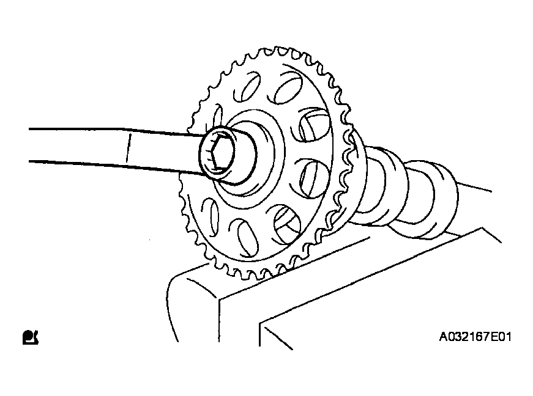
Courtesy of © TOYOTA, LICENSE AGREEMENT TMS1002Torque: 64 N*m (653 kgf*cm, 47 ft.*lbf)
NOTE: Be careful not to damage the camshaft.
- INSTALL NO. 2 CAMSHAFT
- Apply a light coat of engine oil to the camshaft journals.
- Place the camshaft on the cylinder head with the timing mark on the camshaft timing gear facing upward.
- Examine the front marks and numbers, and tighten the bolts in the sequence shown in the illustration.
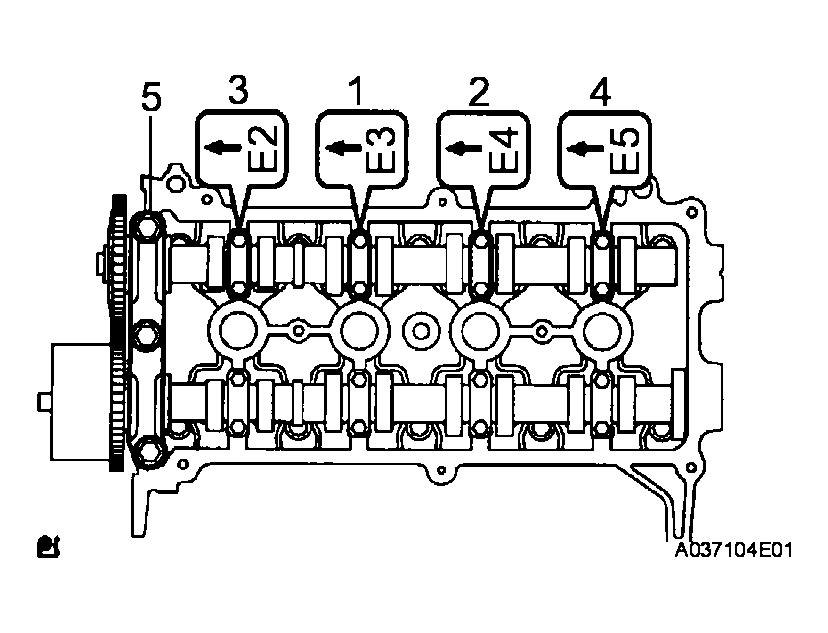
Courtesy of © TOYOTA, LICENSE AGREEMENT TMS1002Torque: 13 N*m (133 kgf*cm, 9 ft.*lbf)
NOTE: Tighten each bolt uniformly, keeping the camshaft level. - Install the No. 1 bearing cap.
Torque: 23 N*m (235 kgf*cm, 17 ft.*lbf)
- INSTALL CAMSHAFT POSITION SENSOR
- Apply engine oil to the O-ring.NOTE: If the O-ring is damaged, replace the camshaft position sensor.
- Install the camshaft position sensor with the bolt.
Torque: 8.0 N*m (82 kgf*cm, 71 in.*lbf)
- Apply engine oil to the O-ring.
- INSTALL CHAIN
- Set the position of the No. 1 cylinder to 20° ATDC.NOTE: To prevent the pistons from hitting against valves, the following procedures must be performed in the order below.
- Set the crankshaft between 40 to 140° ATDC.
- Set the cams of the intake and exhaust timing sprockets to 20° ATDC.
- Reset the crankshaft to 20° ATDC.
- Install the chain vibration damper with the 2 bolts.
Torque: 9.0 N*m (92 kgf*cm, 80 in.*lbf)
- Align the matchmarks of the camshaft timing sprocket, camshaft timing gear and crankshaft timing sprocket with each mark plate (colored in yellow) of the timing chain.
HINT:
To prevent the exhaust camshaft from springing back, turn it using a wrench and set it at the mark on the chain.
- Install the chain tensioner slipper with the bolt.Fig 37: Aligning Matchmarks Of Camshaft And Crankshaft Timing Sprocket With Mark Plate Of Timing Chain
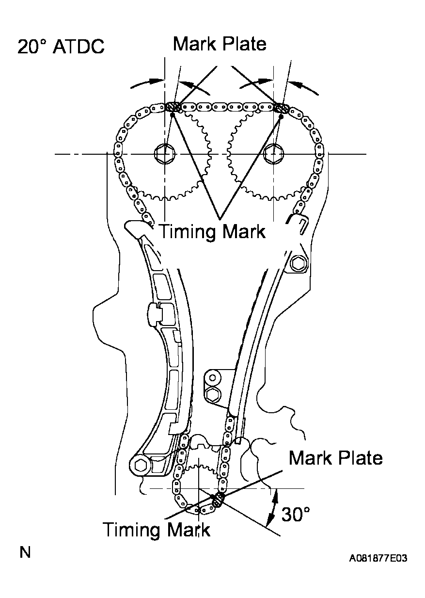
Courtesy of © TOYOTA, LICENSE AGREEMENT TMS1002Torque: 9.0 N*m (92 kgf*cm, 80 in.*lbf)
- While rotating the stopper plate of the chain tensioner upward as shown in the illustration, push in the plunger of the tensioner.
- While rotating the stopper plate of the tensioner downward, insert a 2.5 mm (0.098 in.) diameter bar into the holes of the stopper plate and the tensioner to hold the stopper plate.
- Install the chain tensioner with the 2 bolts.
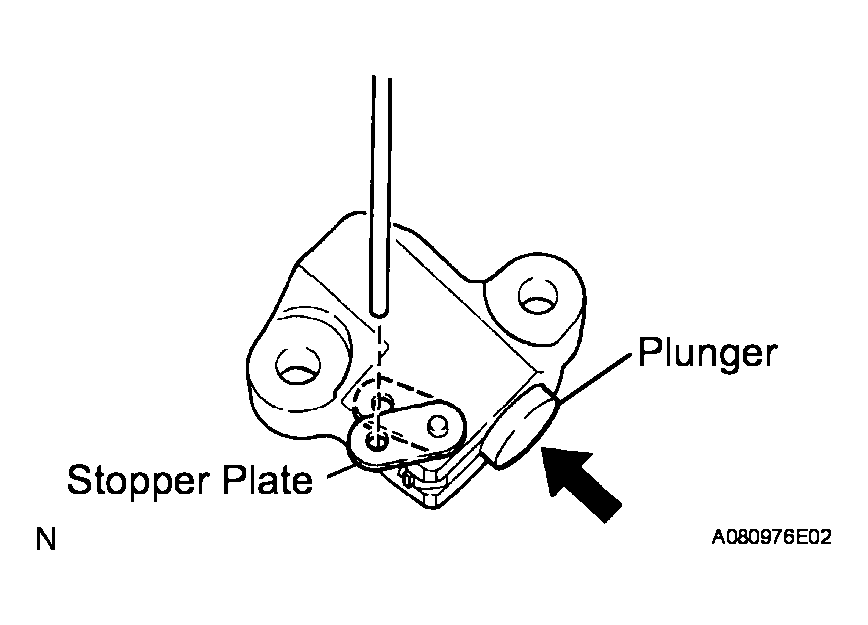
Courtesy of © TOYOTA, LICENSE AGREEMENT TMS1002Torque: 9.0 N*m (92 kgf*cm, 80 in.*lbf)
- Remove the bar from the chain tensioner.
- Check the tension between the intake and exhaust camshaft timing sprocket.
- Set the position of the No. 1 cylinder to 20° ATDC.
- INSTALL OIL PUMP SEAL (See REPLACEMENT )
- INSTALL TIMING CHAIN COVER
- Install 2 new O-rings onto the 2 locations as shown in the illustration.
- Remove any old packing material from the contact surface.
- Apply seal packing to the oil pump assembly, cylinder head and cylinder block as shown in the illustration below.
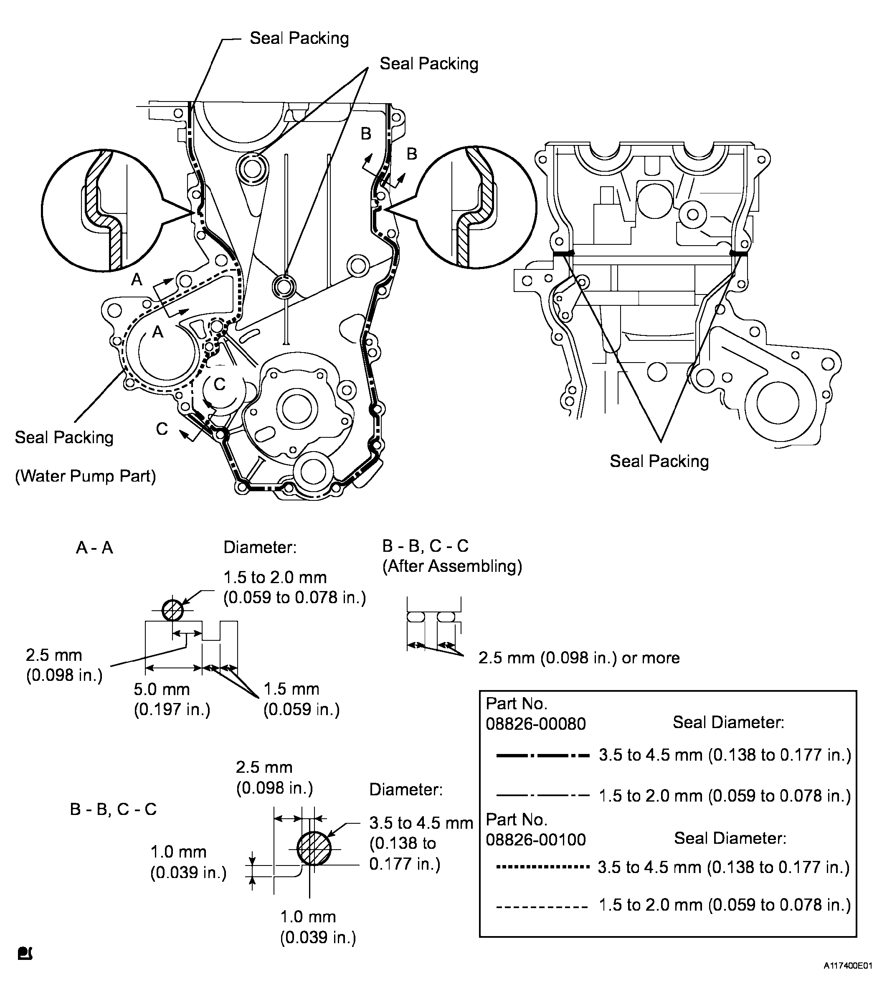
Courtesy of © TOYOTA, LICENSE AGREEMENT TMS1002Seal packing:
Water pump part: Part No. 08826-00100 or equivalent
Other part: Part No. 08826-00080 or equivalent
NOTE:- Remove any oil from the contact surface.
- Install the oil pump within 3 minutes of applying seal packing.
- Do not expose the seal to engine oil for at least 2 hours after installation.
- Do not start the engine for at least 2 hours after installation.
- Align the keyway of the oil pump drive rotor with the rectangular portion of the crankshaft, and slide the oil pump into place.
- Install the oil pump assembly with the 15 bolts and nut. Uniformly tighten the bolts and nut in several steps.
Torque: 24 N*m (245 kgf*cm, 18 ft.*lbf) for bolt A
11 N*m (112 kgf*cm, 8.1 ft.*lbf) for bolt B
11 N*m (112 kgf*cm, 8.1 ft.*lbf) for bolt C
24 N*m (245 kgf*cm, 18 ft.*lbf) for nut D
24 N*m (245 kgf*cm, 18 ft.*lbf) for bolt E
NOTE:- Pay attention not to disturb the seal packing.
- After installing the timing chain case, install the mounting bracket and water pump within 15 minutes.
HINT:
Each bolt length is as follows:
30 mm (1.18 in.) for bolt A
35 mm (1.38 in.) for bolt B
20 mm (0.79 in.) for bolt C
20 to 14 mm (0.79 to 0.55 in.) for bolt E
- INSTALL WATER PUMP
- Install a new gasket and the water pump with the 3 bolts and 2 nuts.
Torque: 11 N*m (112 kgf*cm, 8 ft.*lbf)
- Install a new gasket and the water pump with the 3 bolts and 2 nuts.
- INSTALL ENGINE MOUNTING BRACKET RH
- Install the engine mounting bracket RH with the 4 bolts.
Torque: 55 N*m (561 kgf*cm, 41 ft.*lbf)
- Install the engine mounting bracket RH with the 4 bolts.
- INSTALL WATER PUMP PULLEY
- Using SST, install the pump pulley with the 3 bolts.
SST 09960-10010 (09962-01000, 09963-00600)
Torque: 15 N*m (153 kgf*cm, 11 ft.*lbf)
- Using SST, install the pump pulley with the 3 bolts.
- INSTALL CRANKSHAFT PULLEY
- Align the pin hole of the crankshaft pulley with the pin position, and install the crankshaft pulley.
- Using SST, install the pulley bolt.
SST 09330-00021, 09213-58012 (91111-50845)
Torque: 128 N*m (1,305 kgf*cm, 95 ft.*lbf)
- INSPECT VALVE CLEARANCE (See ADJUSTMENT )
- ADJUST VALVE CLEARANCE (See ADJUSTMENT )
- INSTALL FUEL INJECTOR
- Install new insulators onto each fuel injector.
- Apply a light coat of spindle oil or gasoline to new O-Rings and install them onto each fuel injector.
- Apply a light coat of spindle oil or gasoline to the place where a delivery pipe comes into contact with the O-ring.
- While turning the injector clockwise and counterclockwise, install it to the delivery pipe.
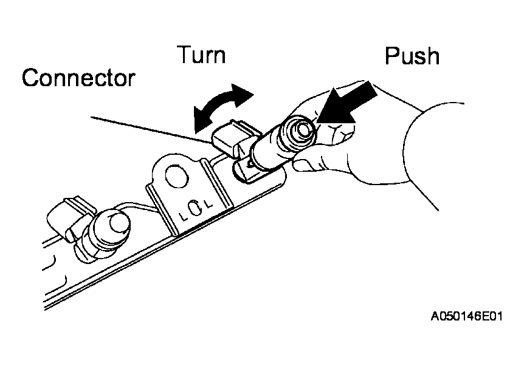
Courtesy of © TOYOTA, LICENSE AGREEMENT TMS1002NOTE:- Be careful not to twist the O-ring.
- After installing the fuel injectors, check that they turn smoothly. If not, reinstall it with a new O-ring.
- INSTALL FUEL DELIVERY PIPE
- Install the 2 spacers onto the cylinder head.
- Install the fuel delivery pipe and 4 fuel injectors together.
Torque: 19 N*m (194 kgf*cm, 14 ft.*lbf) for bolt A
9.0 N*m (92 kgf*cm, 80 in.*lbf) for bolt B
NOTE:- Be careful not to drop the fuel injectors when installing the fuel delivery pipe.
- Check that the fuel injectors rotate smoothly after installing the fuel delivery pipe.
- INSTALL CAMSHAFT TIMING OIL CONTROL VALVE ASSEMBLY
- Apply a light coat of engine oil to a new O-ring, and install it onto the oil control valve.
- Install the oil control valve with the bolt.
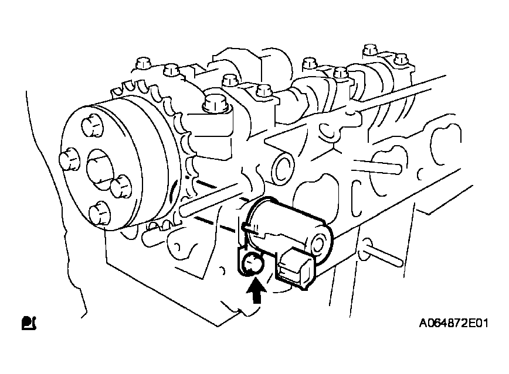
Courtesy of © TOYOTA, LICENSE AGREEMENT TMS1002Torque: 7.5 N*m (76 kgf*cm, 66 in.*lbf)
NOTE: Be careful not to twist the O-ring.
- INSTALL CYLINDER HEAD COVER
- Install the gasket onto the cylinder head cover.
- Apply seal packing to the 2 locations as shown in the illustration.
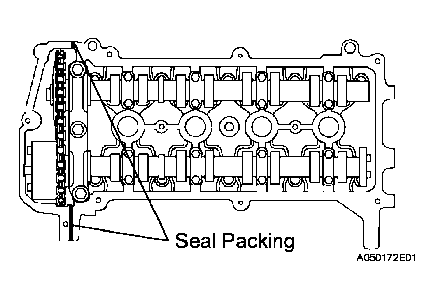
Courtesy of © TOYOTA, LICENSE AGREEMENT TMS1002Seal packing: Part No. 08826-00080 or equivalent
NOTE:- Remove any oil from the contact surface.
- Install the cylinder head cover within 3 minutes of applying seal packing.
- Do not start the engine for at least 2 hours after installation.
- Install the cylinder head cover with the 9 bolts, 2 seal washers and 2 nuts.
- Using several steps, uniformly tighten the bolts and nuts in the sequence shown in the illustration.
Torque: 10 N*m (102 kgf*cm, 7 ft.*lbf)
- INSTALL VENTILATION VALVE
- Install the ventilation valve onto the cylinder head cover.
Torque: 27 N*m (275 kgf*cm, 20 ft.*lbf)
- Install the ventilation valve onto the cylinder head cover.
- INSTALL OIL DIPSTICK GUIDE
- Apply a light coat of engine oil to a new O-ring and install it to the dipstick guide.
- Install the dipstick guide with the bolt.
Torque: 9.0 N*m (92 kgf*cm, 80 in.*lbf)
- INSTALL CRANKSHAFT POSITION SENSOR
- Apply a light coat of engine oil to the O-ring on the crankshaft position sensor.NOTE: If the O-ring is damaged, replace the crankshaft position sensor.
- Install the crankshaft position sensor with the bolt.
Torque: 7.5 N*m (76 kgf*cm, 66 in.*lbf)
- Apply a light coat of engine oil to the O-ring on the crankshaft position sensor.
- INSTALL OIL FILLER CAP
- Install a new gasket and the oil filler cap.
- INSTALL THERMOSTAT
- Install a new gasket onto the thermostat.
- Install the thermostat with the jiggle valve facing upward.
HINT:
The jiggle valve may be set within 10° on either side as shown in the illustration.
- Install the water inlet with the 2 nuts.
Torque: 9.0 N*m (92 kgf*cm, 80 in.*lbf)
- INSTALL SPARK PLUG
- Using a 16 mm plug wrench, install the 4 spark plugs.
Torque: 18 N*m (184 kgf*cm, 13 ft.*lbf)
- Using a 16 mm plug wrench, install the 4 spark plugs.